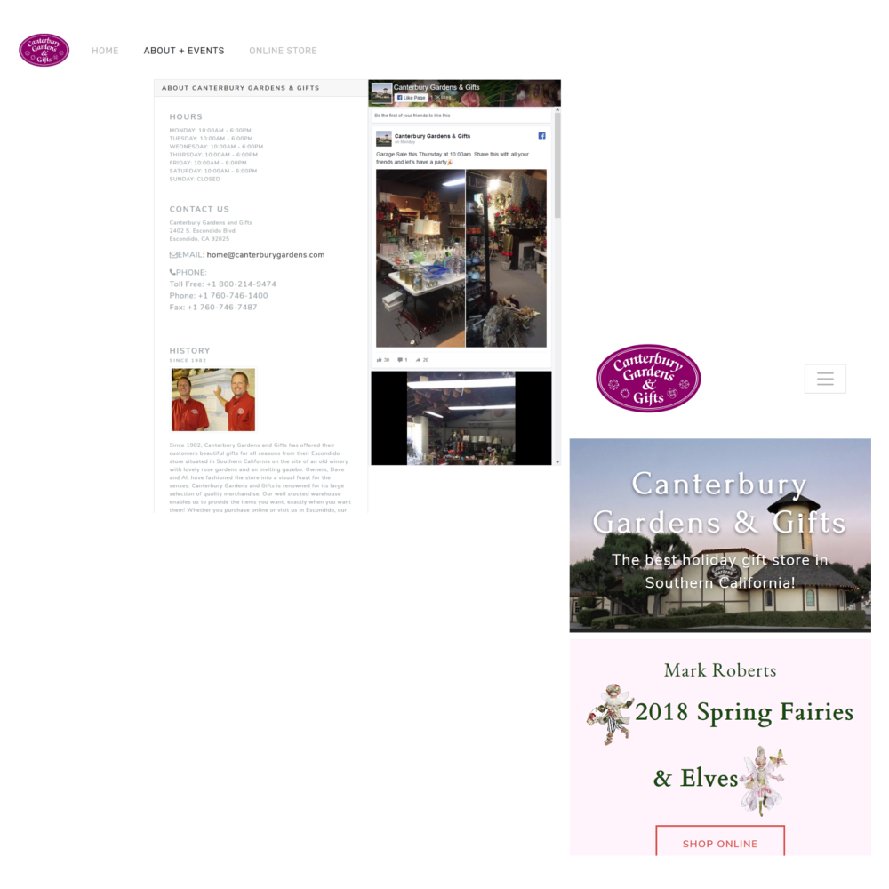

What it's for
Canterburygardens.com is the landing page for Escondido's grandest Christmas store: Canterbury Gardens & Gifts.

Since Canterbury Gardens also has an online store (at YourChristmasStore ), Canterburygardens.com is the domain for people searching for local store information. This means it needs to direct people to the online store if that's what they're looking for, or present the following information:
- upcoming in-store events and sales
- store contact information - address, phone number, email, facebook
- feed of the recent posts on the Canterbury Gardens facebook page
How it's built
It's built on Bootstrap with a responsive navbar.
The store's hours, phone numbers, email and addess covers half of the about + events page. The other half is an embedded Facebook page for Canterbury Gardens. On mobile, they both stack on top of each other for nice and comfortable viewability on mobile.
The site's design is kept clean and easy on the eyes for simplicity and ease of 'theming' the colors and the logo on the website for different holidy events.